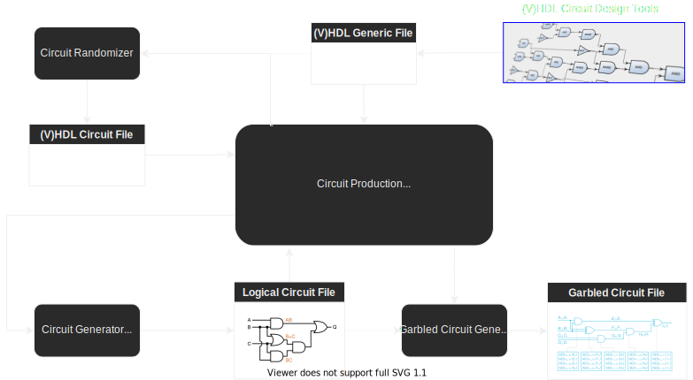

Introduction
“The blockchain ecosystem needs an easy to use interface with hardware wallet security to reach the mass market.”
The main pain points of non-custodial wallet solutions still are:
- User experience Can an easy to set-up wallet be an efficient customer acquisition tool for DeFi players?
- Security Are cryptocurrency wallets more at risk than ever?
We think that current wallet solutions slow down the DeFi adoption.
Interstellar is a novel non-custodial peace of mind mobile wallet with a hardware security level. Based on a Substrate blockchain and SubstraTEE/IntegriTEE workers.
We can now provide the same hardware security level as hardware wallets with only a mobile and a blockchain

Thanks to Trusted User Interface TUI on mobile and Trusted Execution Environment on both mobile and blockchain nodes
Because TUI is not yet avalaible on all mobile devices we use a Garbled Circuit/Visual Cryptography scheme which provides an alternative that will be complementary down the road to mitigate potential flaws in TUI.

Features:
-
Hardware security Level - TEE on nodes and mobiles (incl. TUI), garbled circuits and visual cryptography secure interface
-
Just download an app - no registration, PIN, password, passphrase, private key or any secret to store or remember
-
Multichain Wallet - securely store and interact with native cryptocurrency coins and tokens from multiple blockchains
-
Confirm a transaction with ONLY ONE SCREEN - no SMS to wait for, no additional 2FA app to use, no QR code to scan
-
Up to 1,000,000 tps - no tps limit due to slow consensus, thanks to IntegriTEE layer 2 based on hardware enclave technology
-
Social Recovery Service - leverages the existing Substrate pallet and a novel decentralized autonomous recovery service
We hope that we will be able to provide a response to the related RFP in the following phases
- Features to securely send coins with social network messages (even to persons with no-wallet) - explained in Can an easy to set-up wallet be an efficient customer acquisition tool for DeFi players?
Our solution is designed to support blockchain and DeFi mass market adoption with:
- A decentralized key & asset management service where the user’s privates keys and signature programs are stored and executed in TEE nodes
- A decentralized Trusted Transaction Validation protocol that leverages TEE and TUI features on mobile, combined with One Time Garbled Circuits and Visual Cryptography to provide a Trusted Authentication and Trusted UI layer on user devices
Milestone 1
Intoduction to Garbled Circuit Factory (GCF)
The Garble Circuit Factory is the module in charge of building the Garbled Circuits (GC) used by Interstellar infrastructure.
Following is a high level overview of the genric pipeline used to generate GC.

Garbled Circuit Overview
Basic Garbled Circuit structure overview
A garbled circuit is a cryptographic obfuscation technique and a cryptographic algorithm that ensures computation privacy i.e. manages the protection of a boolean circuit that can be executed without leaking information. Neither the semantics of boolean operators (AND, OR, XOR, etc.) that make up the circuit nor the semantics of inputs and outputs of the circuit will be revealed to the attackers through reverse-engineering or brute force attacks.

- Inputs and outputs are Garbled Values i.e. 128 bits token indistinguishable from random with a secret semantic value of 0 or 1 only known by the nodes
- Each boolean operator is implemented in the circuit by an encrypted truth table, decrypted by its respective Garbled Values inputs.
Foundation of Garbled Circuits, Viet Tung Hoang, B.S.
Garbled Circuit - Visual Cryptography Screen


Main principles
We use a pre-computed One-Time Garbled Circuit to generate and output Visual Cryptography Shares at 60–120 frames/second on the device framebuffer.
Those visual cryptography shares do not superpose on the device screen but only in the user's eye. Thanks to the human Persistence of Vision ability: your eye and brain retain a visual impression for about 1/30 of a second (the exact time depends on the brightness of the image).
This ensures that an attacker won't be able to obtain the secret information (transaction message, one time code and random keypad topology) with a simple screenshot, or quickly enough to build and execute a fake User Interface. This scheme can resist current banking trojans with overlay capabilities but not targeted attacks. However, it makes a fake UI attack, complexe and resource intensive enough to enable us to detect it during the transaction validation session. This is the way we aim at resisting potential targeted attacks. Thanks to our proof of history of legitimate computation scheme, (roadmap/research in progress), based on a specific reusable Garbled Circuit evaluation.
Although we started by implementing a working solution that outputs visual cryptography shares we realized that it was a bit disturbing for the user and that a pure visual cryptography scheme is not crucial for our overall security model. We then decided to provide a more friendly solution for the user that is also more efficient especially regarding Garbled Circuit size.
Explanation
Although our circuits still display screens at a pixel level to change fonts, characters sizes and more, let's go back to old fashioned displays to explain it.

The Garbled Circuit will randomly output 1/n segments/sub segments per frames, with n > 2

Transaction validation screen simulations based on PsychoJS library - PsychoPy (github.com)
At a later stage, we aim at reusing our pixel based and/or segment-based visual cryptography to increase the complexity level of potential attacks and enable video recording proof scheme without disturbing the smooth user experience.
Research lead is to leverage SRAM framebuffer speed 10-30x vs. DRAM to force the attacker to miss frames with a saturated GPU command queue filled with decoy and VC frames on high frequency displays.
Detailed Pipeline for Display Circuits Production
This is the Garbled Circuits generation detailed pipeline for the Transaction Validation screen use case.
It illustrates the way Garbled Circuit Factory can be used with substrate OCWs for the production of the display garbled circuits used by Interstellar.
Pipeline
NOTE: the file types are mentioned for clarity and to allow matching with calling the executables (e.g. Yosys or ABC) manually, but in practice after [2] all is done in memory, and cached.
On the following schema, cached files are represented with red doted line
The red arrow represents the command to lauch the circuit generation pipeline from OCW GCF

Overview :
[1] Generate~ “segment2pixel.v” using internal code [using e.g. 7segs.png]
[2] Verilog → .blif: combine all Verilog(displaymain+xorexpand+rndswitch+segment2pixel) using Yosys
[3] .blif → .blif.blif : optimization /synthesis : using ABC
[4] Parsing .blif → .skcd : using internal code
[5] Garbling .skcd → .garbled: using JustGarble
[6] Finalize/Serialize .garbled → .pgarbled: Using internal code; allows for parallel eval of a Garbled Circuit
[1] Generate “segment2pixel.v”
Note : this is the only file in the pipeline that needs to be regenerated when changing size/resolution. The rest (displaymain+xorexpand+rndswitch) are static, and the size/resolution is handled by passing the appropriate “`define” to Yosys. This allows to cache the resulting .skcd of the whole pipeline (cf CircuitDisplayGenerator::GenerateDisplay) using “segment2pixel.v” content as cache key.
7segs.png (or other*) is parsed from an embedded resource into the executable, and prepared for later use (and some pre-computation is done based on the colors of the .png)
*We can use other files like 14segs.png to handle segment based viusla cryptography down the road
CircuitDisplayGenerator::GenerateSegmentToPixelVerilog A “bitmap” is generated with the correct number of digits at the correct positions [in relative coords] E.g. 2-4 digits in the center of the “message window”, and 10 digits vertically oriented for the “pinpad window” If there is an in-memory .skcd cached for this particular “segment2pixel.v” it is returned and that part is done
[2][3][4] Generate .skcd
If there is no cached .skcd for the step [1], one is generated cf CircuitDisplayGenerator::GenerateDisplay
The big steps are self-explanatory (pretty much just calling ABC or Yosys, and handling/parsing the results or errors; most of the business logic is in step [1]) :
if (is_message) {
YosysHelper::CompileVerilog(MESSAGE_SEGMENT2PIXELS_V,
MESSAGE_SEGMENT2PIXELS_V ".blif");
} else {
YosysHelper::CompileVerilog(PINPAD_SEGMENT2PIXELS_V,
PINPAD_SEGMENT2PIXELS_V ".blif");
}
GenerateDefineVerilog(is_message, msgsize, nb_segments, circuit_display_size);
CompileVerilogHelpers(is_message);
ConcatBlifs(is_message);
RunAbc(is_message);
// when segment2pixels cache is disabled, nothing to do, we can return
if (!allow_cache) {
return Blif2Skcd(is_message);
}
// segment2pixels enabled: we need to store the new entry into the SkcdCache
Skcd skcd = Blif2Skcd(is_message);
skcd_cache_->Set(hash_segment2pixels, skcd);
return skcd;
[5][6] Garbling
Technically garbling + “stripping” (i.e. generating the “pre-packmsg”). This is at this step that the pinpad/OTP randomness is introduced, i.e. the .skcd generated at the previous step CAN/SHOULD be reused (and it is) all the time (i.e. it is always reused, except when changing size or resolution).
We can manage 2 modes: on the fly generation and pre-computation of randomized circuits ( with random pinpad and OTP) with whithout transaction message. The second mode will use “stripped circuits” sent to a device ahead of time and the “pre-packmsg” is stored in the DB. Then when creating a transaction, the “pre-packmsg” is used to generate the correct “packmsg” with the desired transaction message (e.g. “Do you authorize sending X BTC to Y address”), and then send it to the Device. The Device then combines the “packmsg” and the “stripped circuits” and proceed to evaluate the circuits (= generating the final bitmap, one for each frame at the target 60+ FPS).
Regarding Transaction Validation displays, sending the circuits ahead of time is no mandatory (i.e. the generation is fast enough, and the size small enough to be able to get them on the spot even on a mobile) although this feature can be used in some specific cases and for other use cases.
Circuit Pipeline API
We have chosen a GRPC implementation mainly because there is no no_std HTTP2 client in Rust, although there are a some no_std Protobuf libs out there in the tokio framework and also this one, but this is only half the required parts.
Garbled Cicuit Factory API
Flowchart and substrate GCF pallets

APIs
This is a list of APIs used in substrate framework to pilot the generation of the Garbled Circuits needed by the Interstellar infrsstructure.
TEST/CHECK rust code display with ace theme
use tonic::transport::Server; mod circuits_routes; #[tokio::main] async fn main() -> Result<(), Box<dyn std::error::Error>> { // TODO tracing // tracing_subscriber::fmt::init(); // TODO configurable port let addr = "127.0.0.1:3000".parse().unwrap(); let circuits_api = circuits_routes::CircuitsServerImpl::default(); let circuits_api = circuits_routes::interstellarpbapicircuits::circuits_api_server::CircuitsApiServer::new( circuits_api, ); // let greeter = InterstellarCircuitsApiClient::new(greeter); let circuits_api = tonic_web::config() .allow_origins(vec!["127.0.0.1"]) .enable(circuits_api); println!("GreeterServer listening on {}", addr); Server::builder() .accept_http1(true) .add_service(circuits_api) .serve(addr) .await?; Ok(()) }